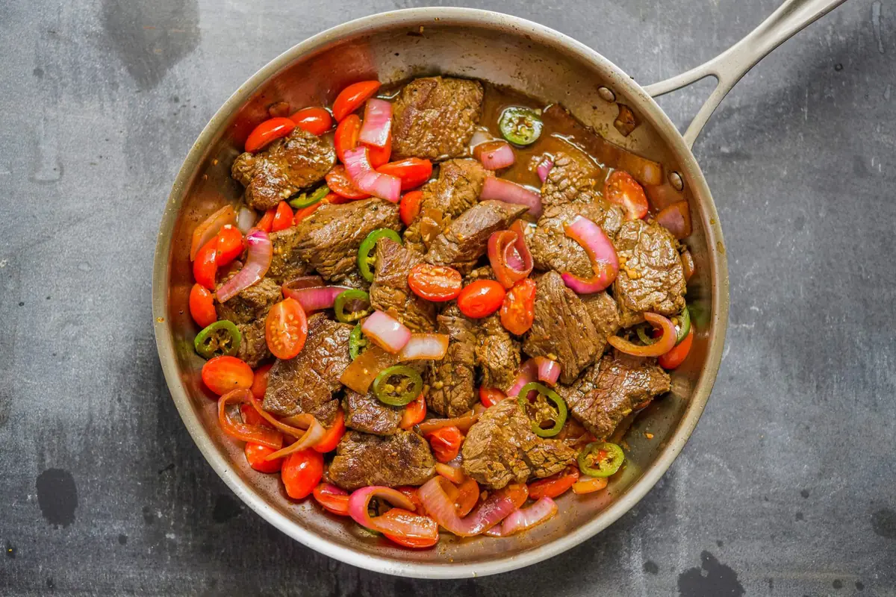

Lomo Saltado (Peruvian Beef)
- Total time35 mins
- Serves4
- Ingredients10
- Steps4

Ingredients
- 1 1/2 lbs sirloin tips, trimmed, cut into 3-inch pieces and sliced against the grain into 1/2-inch strips
- 1 1/2 teaspoons ground cumin
- Kosher salt and ground black pepper
- 5 tablespoons soy sauce, divided
- 3 tablespoons grapeseed or other neutral oil, divided
- 1 large red onion, halved and cut into 1/2-inch half rings
- 1/4 cup red wine vinegar
- 2 medium garlic cloves, minced
- 1 jalapeño chili, stemmed and sliced into thin rounds
- 1 1/2 cups grape tomatoes, halved
Directions
- In a medium bowl, combine the beef, cumin, ½ teaspoon salt, 1 teaspoon pepper, and 2 tablespoons of soy sauce. Marinate at room temperature for 10 minutes. Pat the meat dry and set aside. In a medium bowl, combine the beef, cumin, ½ teaspoon salt, 1 teaspoon pepper, and 2 tablespoons of soy sauce. Marinate at room temperature for 10 minutes. Pat the meat dry and set aside.
- In a 12-inch skillet over high, heat 1 tablespoon of oil until barely smoking. Add half of the meat in a single layer and cook, turning once, until well browned on both sides, 2 to 3 minutes total. Transfer to a plate. Repeat with 1 tablespoon of the remaining oil and the remaining meat.
- In the same pan over medium-high, heat the remaining 1 tablespoon oil until shimmering. Add the onion and cook, stirring, until just starting to soften, about 2 minutes.
- Stir in the vinegar and remaining soy sauce, scraping the bottom of the pan to remove any browned bits. Cook for about 1 minute, or until the sauce thickens slightly. Stir in the garlic and jalapeño and cook until the garlic is fragrant, about 30 seconds. Add the tomatoes, the meat and any accumulated. Cook until the meat is just warmed through, 30 seconds. Taste and season with salt and pepper.
Recipe credit: Milk Street Tuesday Nights by Christopher Kimball and 177milkstreet.com